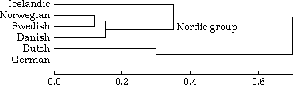

Home
Data Clustering
Utilities for performing clustering on vector data or difference
data, creating dendrograms.
This Web page offers several utilities for performing clustering on data
sets. Input can be either a set of vectors or a table with difference
values. Several programs piped together finally result in a PostScript
image of a dendrogram, or an on-screen image (Unix/X11 or MS-DOS).
- Changes:
-
- 25 june 2007
- New option -s for cluster.
- 16 januari 2007
- Added alternative names for cluster methods in the program cluster.
- 10 september 2005
- The program cluster will abort if a file
_CANCEL_.L04 exists in the current directory, or if it is
created while cluster is running.
- 18 july 2005
- New option -u for den.
- 16 july 2004
- Replaced use of deprecated header file <values.h> in
clgroup,
cluster,
den,
denxview, and
difftbl.
- 30 june 2004
- Renaming of variable in den to solve conflict on some compilers.
- All changes
The next figure is an example of a dendrogram.

Software
- Makefile -- Unix Makefile for all programs. Updated 2004/07/16
- difftbl.c -- For conversion of
vector data into a difference table, using one of several difference measures. Updated 2004/07/16
- difftbl.exe -- Windows
executable. Updated 2004/07/16
- cluster.c -- Data clustering on a
difference table, using one of several algorithms. Updated 2007/06/25
- cluster.exe -- Windows executable. Updated 2007/06/25
- den.c -- Program for transforming
clustering data into a PostScript image of a dendrogram. Updated 2005/07/18
- den.exe -- Windows executable. Updated 2005/07/18
- denxview.c -- Unix/X11 program for transforming
clustering data into an on-screen image of a dendrogram. Updated 2004/07/16
- denview.exe -- MS-DOS program for transforming
clustering data into an on-screen image of a dendrogram.
- denview.c, egavga.obj, denview.mak -- Files for compiling
denview on MS-DOS, using Borland C 3.0. Updated 2002/05/31
- clgroup.c -- Display cluster grouping. Updated 2004/07/16
- clgroup.exe -- Windows executable. Updated 2004/07/16
Usage
All programs read input either from stdin or from a file, and
write to stdout, except for denxview and
denview. You can examine
the data files used in the examples below to learn about their syntax.
A typical usage is:
difftbl vector-file | cluster -w | den > PostScript-file
But you can substitute your own program in any part of this pipe.
difftbl
This program reads a file with data vectors, and produces a difference
table. The program has the following options:
- -c
- Use city block distance.
- -e
- Use Euclidean difference (default).
- -p
- Use 1 - Pearson correlation coefficient.
- -s
- Use square difference.
- -o filename
- Output file
- -P
- Generate pair listing
Example:
difftbl NLchars.vec > NLchars.dif
cluster
This program is an implementation of seven different clustering
algorithms, which are described in:
Anil K. Jain and Richard C. Dubes.
Algorithms for Clustering Data.
Prentice Hall, Englewood Cliffs, NJ, 1988.
The program reads a difference file, and creates a clustering.
The program will abort if a file _CANCEL_.L04 exists in the
current directory, or if it is created while cluster is
running. This is useful for stopping long running calculations from a GUI.
What clustering algorithm to use is defined by the following options:
- -sl
- Single Link (Nearest Neighbor)
- -cl
- Complete Link (Furthest Neighbor)
- -ga
- Group Average (UPGMA: Unweighted Pair Group Method using Arithmetic averages)
- -wa
- Weighted Average (WPGMA: Weighted Pair Group Method using Arithmetic averages)
- -uc
- Unweighted Centroid (Centroid, UPGMC: Unweighted Pair Group Method using Centroids)
- -wc
- Weighted Centroid (Median, WPGMC: Weighted Pair Group Method using Centroids)
- -wm
- Ward's Method (Minimum Variance)
Other options:
- -b
- binary output. Instead of a clustering, the output is a difference file
of times each pair of
items was placed in different clusters. Only makes sense in combination with
option -m.
- -c
- cophenetic output. The output is a difference file with cophenetic
values, instead of a clustering.
- -m int
- -m int-int
- -m int-int+int
- maximum number of clusters for binary or cophenetic output. This option can be used
more than once. You can define ranges of numbers, for instance:
-m 2-8
-m 2-11+3
The first example selects all values from 2 to 8 inclusive, the second selects
the values 2 5 8 11.
- -N float
- Noise. Before clustering, all values are increased by a random value
between zero and sd times the specified value, where sd
is the standard deviation of all the original values. This option can
be used more than once.
- -o filename
- Output file
- -r int
- Number of runs. Only useful if -b (or -c) and -N are used as well.
- -s int
- Seed for random number generator.
- -u
- Unsorted
Example:
cluster -wm NLchars.dif > NLchars.clu
Please note the order of the data in the input file. Lines starting with
a hash (#) are only comments. They do not define the order of the data.
den
This program transforms a clustering file into a PostScript image of a
dendrogram. Labels in the input data may contain all characters from the
ISO Latin 1 character set. The
program has the following options:
- -2
- Produce PostScript Level 2, that is, assume the
ISOLatin1Encoding array has already been defined.
- -a
- Curved links (default: rectangular).
- -b float
- Usually, 0 is used as the offset, or the minimum value in the
clustering data if that value is negative. You can use this option to
define the offset yourself.
- -c
- Color links (with number of groups from 2 through 19). The colors
corresponds to those used by the program mapclust,
part of the RuG/L04 package.
- -C
- Color labels (with number of groups from 2 through 19). The colors
corresponds to those used by the program mapclust,
part of the RuG/L04 package.
- -e float
- Exponent (default: 1.0). The cluster values are raised to this
exponent. The values on the ruler are adjusted likewise. For example,
to get the square root of the values, use: -e .5
- -E
- Print an example cluster file.
- -f int
- Fontsize (default: 8).
- -h
- use rainbow colours, light and dark, instead of standard colours
(no limit to number of groups)
- -H
- use rainbow colours, light, instead of standard colours
(no limit to number of groups)
- -I
- Cluster numbers (implies: -L).
- -L
- No labels.
- -n int
- Number of groups (default: 1). The dendrogram will be split in a
number of groups, with extra space between the groups. This
option is required if you want colors or patterns.
- -o filename
- output file
- -p
- Placement of labels in two columns,
making room for twice the number of labels.
- -P
- Patterns (implies: -2 -L, with number of groups from 2 through 19). The patterns
corresponds to those used by the program mapclust,
part of the RuG/L04 package.
- -Q
- Symbols (implies: -2, with number of groups from 2 through 19). The symbols
corresponds to those used by the program mapclust,
part of the RuG/L04 package.
- -r float
- Line skip for ruler (in points, 1 point = 1/72 inch).
- -R
- No ruler.
- -s float
- Line skip within groups (in points, 1 point = 1/72 inch).
- -S float
- Line skip between groups, see option -n (in points, 1 point = 1/72 inch).
- -t
- Triangular links (default: rectangular).
- -T
- Font Times-Roman (default: Helvetica). Helvetica usually looks
better in diagrams, Times-Roman in running text. The old version of
den used Times-Roman.
- -u filename
- User-defined colours. Instead of using built-in colours, read colours
from a file. Each line in the file should have three values, separated
by white-space. These are the red, green, and blue components. The
values should be in the range 0 to 1, or in the range 0 to 255.
Example:
den NLchars.clu > NLchars.ps
Below is an example created with the options -b.1 -c -e.5 -L -n4

denxview
This program (Unix only) reads a clustering file and displays a
dendrogram in a window on the X11 display. To quit the program, type
'q' in the window. Options:
- -b float
- See: den.
- -f fontname
- A valid X11 font name. For really large dendrograms you could use
a 5x8 font.
denview
This program (MS-DOS only) reads a clustering file and displays a
dendrogram on a VGA terminal. Option:
- -b float
- See: den.
clgroup
This program prints a cluster grouping from a cluster file. Options:
- -n int
- Number of groups
- -i
- Indexed output
- -o filename
- Output file
With indexed output, labels are "quoted" if there are spaces or tabs in the
labels, or if the label starts with a quote.
Examples:
clgroup -n 3 NLchars.clu > NLchars.txt
clgroup -n 3 -i NLchars.clu > NLchars-i.txt
Example clustering file
The next example is used to illustrate the syntax of a clustering
definition. It describes the dendrogram in the figure at the top of this document.
# Example cluster file
1 .12
L Norwegian
L Swedish
2 .15
C 1
L Danish
3 .3
L Dutch
L German
4 .35 Nordic group
L Icelandic
C 2
5 .7
C 4
C 3
Empty lines are ignored. Anything starting with # is treated as
a comment.
A clustering definition is a set of descriptions of clusters. Each
cluster has an index number, a value, and two links to either other
clusters or to labels. There can also be an optional textual comment.
Each cluster is defined in three lines.
- The first lines contains a number used for identification. Each
cluster needs an unique integer index number.
Following the index is a value that defines the difference between the
two sub-clusters or labels.
Any text following the difference value is treated as a description to
be added to this particular cluster.
- The second lines describes what the first item of this
cluster is. It can be either a sub-cluster or a label.
A sub-cluster is indicated with a letter C followed by the
index number of that sub-cluster.
A label is indicated with a letter L followed be the text of
the label itself.
- The third line describes the second item of this cluster. The
syntax is identical to the second line.
Cluster definitions can be given in any order. Swapping the second and
third line in a definition swaps the two branches of this cluster in the
output figure.
Compare the items in the above example to the figure.
Cluster number 1 has two labels, Norwegian and Swedish.
This cluster is indicated in the figure by the line
connecting Norwegian to Swedish.
Cluster number 4 has one label, Icelandic and a sub-cluster with number
2. It connects the label Icelandic to the cluster containing Norwegian,
Swedish and Danish. The description 'Nordic group' is placed at the
right of the connecting line.
Cluster number 5 has two sub-clusters. It connects the cluster containing
the Nordic group to the cluster containing Dutch and German.
How to use the PostScript figure
The PostScript figure produced by the program den can be
used in various ways.
- It can be printed directly on a PostScript printer.
- It can be printed on a matrix printer with the help of a PostScript
interpreter such as ghostscript.
- It can be viewed on screen with a PostScript viewer such as
ghostview or gv.
- It can be converted to an
image, for instance with
ghostscript.
- It can be incorporated in a document, for instance in LaTeX, using
the dvips/psfig package.
- It can be modified with a text editor, scaled, rotated, added to
Ghostscript, ghostview, gv, LaTeX and dvips are available free for many
computer platforms.